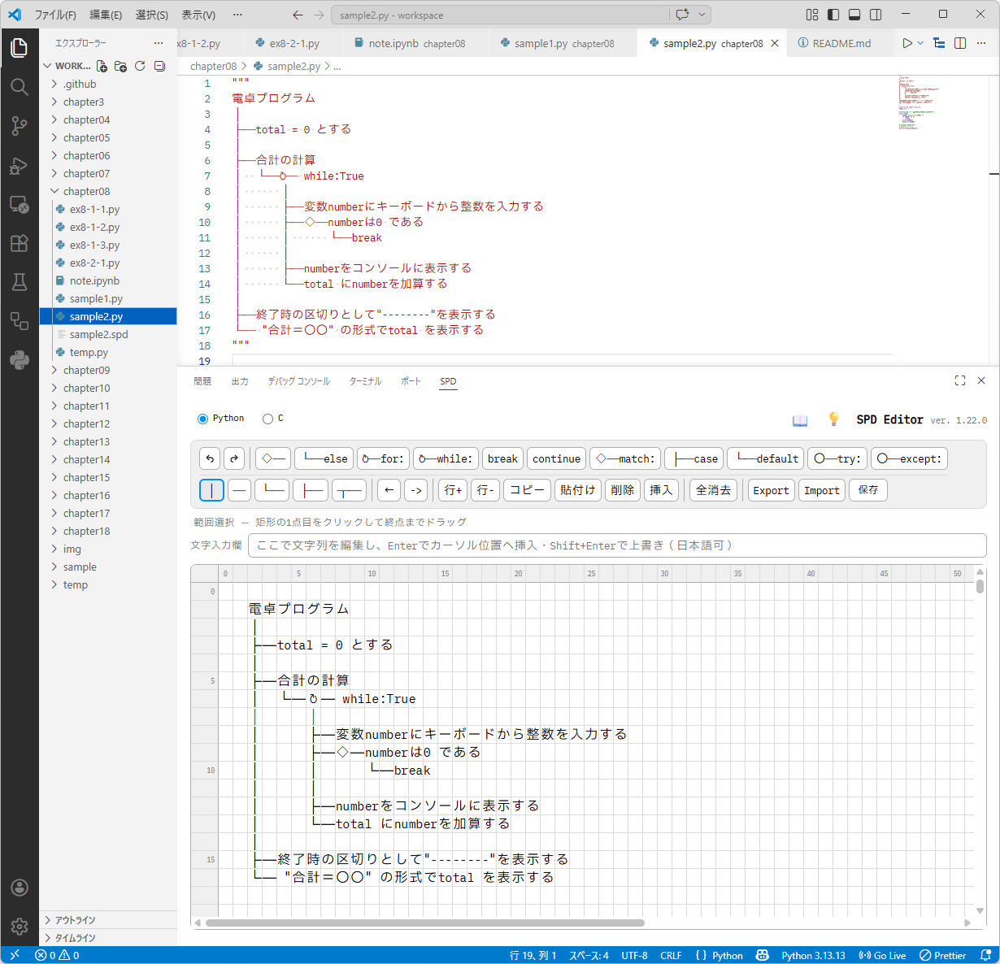
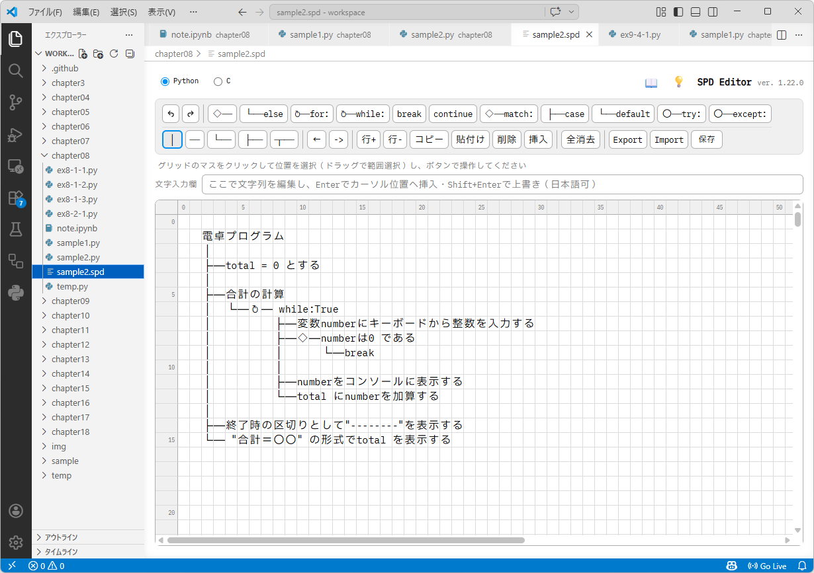

SPD（構造化プログラム設計図）を方眼の画面で描いて編集する VS Code 拡張機能です。
HTML/JavaScript 製の SPD エディタ（kawaba/spd-editor）を
VS Code の中で使えるようにしたもので、Eclipse 版（kawaba/eclipse-spd-plugin）と同じ機能です。
.py のファイル（C なら .c）を開いているときに、次のどちらかで開きます。
SPD エディタは画面下のパネル（「ターミナル」「問題」と同じ場所）に開きます。この開き方には次の特徴があります。
パネルの高さは境目をドラッグして変えられます。パネル右上の「パネルを最大化」で広げることもできます。
コマンド「SPD: SPDエディタを開く」や「表示 → ビューを開く…」→「SPD エディタ」でも開けます。

"""、C は /* */）でクリップボードにコピーされる.py のファイルの先頭など、貼り付けたい場所で Ctrl+Vあとで SPD を直したいときは、次のようにします。
画面の操作方法は、SPD エディタ右上の 📖（解説）・💡（記述パターン）を参照してください。
.spd ファイルとして残す（必要なときだけ）SPD をソースコードとは別のファイルとして残したい・提出したいときに使います。普段は 2. の使い方で十分です。
.spd に保存します。hello.py なら hello.spd）です.spd ファイルを開くと、タブに SPD エディタの画面が開きます。
SPD の罫線を全角幅で表示するフォント PlemolJP HS を同梱しています。SPD エディタの画面ではインストールしなくても使われます。
Export した SPD がソースコードのエディタでずれるときは、コマンド「SPD: フォントのフォルダを開く」で開くフォルダの README.txt を見てください。
コマンドでインストールすることもできます。
code --install-extension kawaba.spd-editorインストールしたあとは、新しい版が出ると自動で更新されます。
.vsix ファイルから（授業で配布する場合）spd-editor-X.Y.Z.vsix を用意するコマンドでインストールすることもできます（ポータブル版の自動セットアップなど）。
code --install-extension spd-editor-X.Y.Z.vsix| 設定 | 既定値 | 説明 |
|---|---|---|
spd.defaultLanguage | python | 空のファイル・SPD ビューを開いたときの言語（python / c） |
言語のラジオボタンは Python と C だけです。Eclipse 版などで Java 系の言語で保存した .spd を開いたときは、
その言語のラジオボタンも表示されます（知らないうちに別の言語へ変わらないようにするため）。
設定を変えたあとに開いた画面から反映されます。
.spd ファイルの形式SPD エディタの「保存」と同じ JSON（UTF-8）です。Eclipse 版・ブラウザ版と相互に読み書きできます。
{
"lang": "python",
"data": {
"3,1": "│",
"3,2": "aa"
}
}lang：python / c（Eclipse 版で作ったファイルでは java（JavaSE）/ spring / thymeleaf もある）data：キーは "x,y"（0 起点の列,行）、値はそのマスの文字。空マスは持たないテキストとして見たいときは、タブを右クリック →「エディターを開き直す…」→「テキスト エディター」で開けます。
npm install
npm run compile.vsix の作成：npm run packagemedia/editor.html とスケルトン media/patterns/*-patterns.js）は元の SPD エディタの複製です。直接編集せず、元を直してから
powershell -ExecutionPolicy Bypass -File .\sync-web.ps1 で複製します（拡張機能の版も SPD エディタの版にそろいます）。v1.22.1 など）を push すると GitHub Actions（.github/workflows/publish.yml）が Marketplace に出します。LICENSE）media/fonts/LICENSE-PlemolJP.txt）